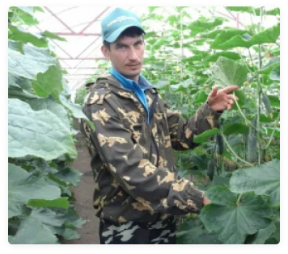

Томаты на ветке красные (помидоры) - более плотные, яркие и ароматные по сравнению с обычными.
Они славятся низкой калорийностью и высоким содержанием витаминов, клетчатки, пектина и минеральных веществ. В них содержатся также каротиноиды, кислоты и мощный антиоксидант ликопин.
Наталья и Юрий Лейшан
